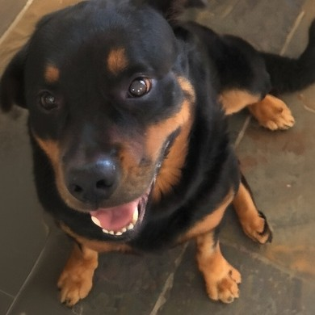

Bug
Rottweiler · 10 anos · Rio de Janeiro, RJ
Degustador de comidas profissional, mestre em cochilos longos e com certificado em latir para o carteiro.
- Petiscos
- Sonecas
- Fofo e Marrento

Rottweiler · 10 anos · Rio de Janeiro, RJ
Degustador de comidas profissional, mestre em cochilos longos e com certificado em latir para o carteiro.